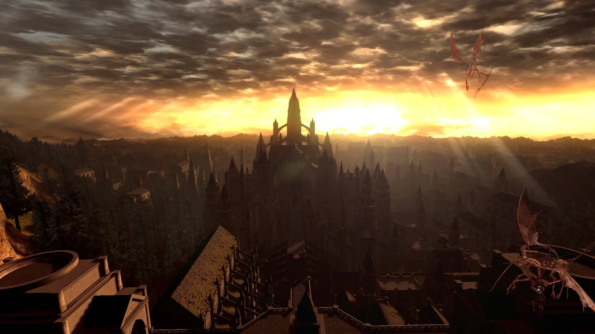
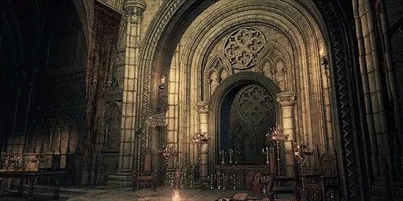

O Mundo de Lordran e Além
Dark Souls é uma série de RPG de ação conhecida por sua dificuldade desafiadora e sua narrativa fragmentada contada através de itens e cenários.
O jogador assume o papel de um "Undead" (morto-vivo) que precisa decidir o destino da Primeira Chama em um mundo em decadência.
A Trilogia Principal
A saga desenvolvida pela FromSoftware é composta por três títulos principais:
- Dark Souls (2011)
- Dark Souls II (2014)
- Dark Souls III (2016)
Mecânicas e Chefes
A jogabilidade é punitiva, mas justa, exigindo paciência e observação dos padrões dos inimigos.
Chefes Lendários:
- Nameless king
- Ornstein & Smough
- Knight Artorias
Visual do Jogo


Para mais detalhes sobre as builds e mapas, consulte o guia oficial:
Acessar Wiki de Dark SoulsAcessar outra página